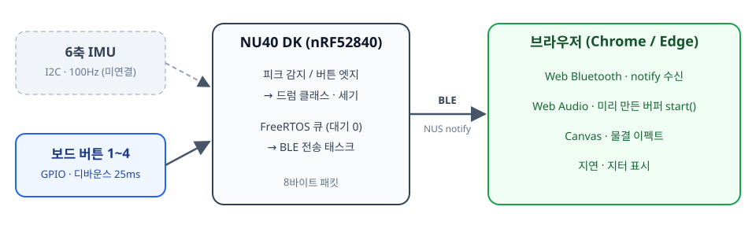
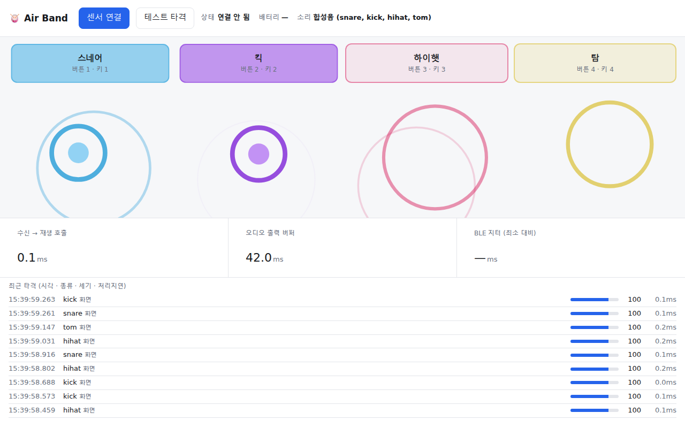
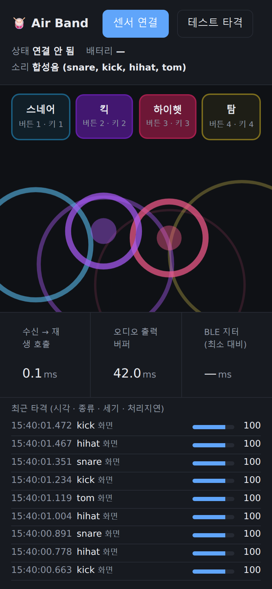

NU40 DK (nRF52840) · Web Bluetooth · Web Audio
손목이나 스틱에 단 작은 보드가 타격 동작을 감지합니다.
"언제, 어떤 드럼을, 얼마나 세게"만 8바이트로 전송합니다.
앱 설치 없이 주소 하나로 엽니다. PC Chrome/Edge, Android Chrome.
최종 목표: 동작만으로 스네어 / 하이햇 / 탐을 구분하는 양손 에어 드럼 (TinyML)

보드는 판단만, 소리는 브라우저가 냅니다. 버튼과 IMU는 같은 전송 경로를 씁니다.
AirBand-R| 바이트 | 필드 | 값 |
|---|---|---|
| 0 | 손 | 0 = 오른손 |
| 1 | 모드 | 0 = 드럼 |
| 2 | 드럼 종류 | 0 스네어 · 1 킥 · 2 하이햇 · 3 탐 |
| 3 | 세기 | 1~127 (MIDI velocity) |
| 4~7 | 보드 시각 | millis() LE uint32 |
micros() 비교)classifyHit() 훅 → 2단계 TinyML 자리Bluefruit notify는 송신 버퍼가 차면 최대 100ms 대기합니다. 샘플링 루프는 FreeRTOS 큐에 대기 0으로 넣기만 하고, 별도 태스크가 전송합니다.
static void emitHit(uint8_t cls, uint8_t vel, uint32_t ts) {
HitPacket p;
buildPacket(p, cls, vel, ts);
xQueueSend(g_hitQueue, &p, 0); // 대기 0: 큐가 가득 차도 막히지 않음
}
[I2C] scan: 0x6A
[IMU] 감지 실패 — 배선/주소/모델 확인 후 재시도
[IMU] 0x6A reg0x0F=FF reg0x75=FF reg0x00=61
0x6A는 IMU가 아닌 보드의 전원 관리 칩💡 덤: LSM6DS 계열 IMU는 기본 주소가 0x6A라 이 보드에서는 SA0 → 3V3 (0x6B)로 써야 충돌이 없습니다.
센서만 빼고 나머지 경로 전체를 먼저 검증합니다.
[IMU] 없음 — 버튼 전용 모드로 동작
[BTN] 버튼 1~4 → 드럼 0~3
[BLE] 광고 시작: AirBand-R

드럼마다 위치·색이 다른 물결 · 누른 패드가 빛남 · 입력 출처(보드/화면) 로그
AudioBuffer로 준비start()만 호출 (fetch·디코딩 없음)(v/127)^1.6 곡선| 드럼 | 합성 |
|---|---|
| 스네어 | 220→160Hz 사인 + 고역 노이즈 |
| 킥 | 150→45Hz 급하강 사인 + 클릭 |
| 하이햇 | 5kHz 이상 노이즈, 0.12초 |
| 탐 | 180→110Hz 사인 + 약한 노이즈 |

| 환경 | 지원 |
|---|---|
| PC Chrome / Edge | ✅ |
| Android Chrome | ✅ |
| iOS Safari / Chrome | ❌ Web Bluetooth 없음 |
| Firefox | ❌ |
HTTPS 또는 localhost 필수 · 다크 모드 지원
WSL의 /mnt/c가 권한 정보 없이 마운트됨 → wsl.conf에 metadata 옵션 추가
/mnt/c는 변경 알림이 안 옴 → Vite watch.usePolling
캔버스 크기를 한 번만 잼 → ResizeObserver로 교체
보드 전원 칩이 0x6A 사용 → IMU는 0x68 / 0x6B
peak= 값으로 임계값·최대 세기 조정classifyHit() 교체
cd air-band/web && npm install && npm run dev # http://localhost:5173
1~4AirBand-R → 보드 버튼 1~4